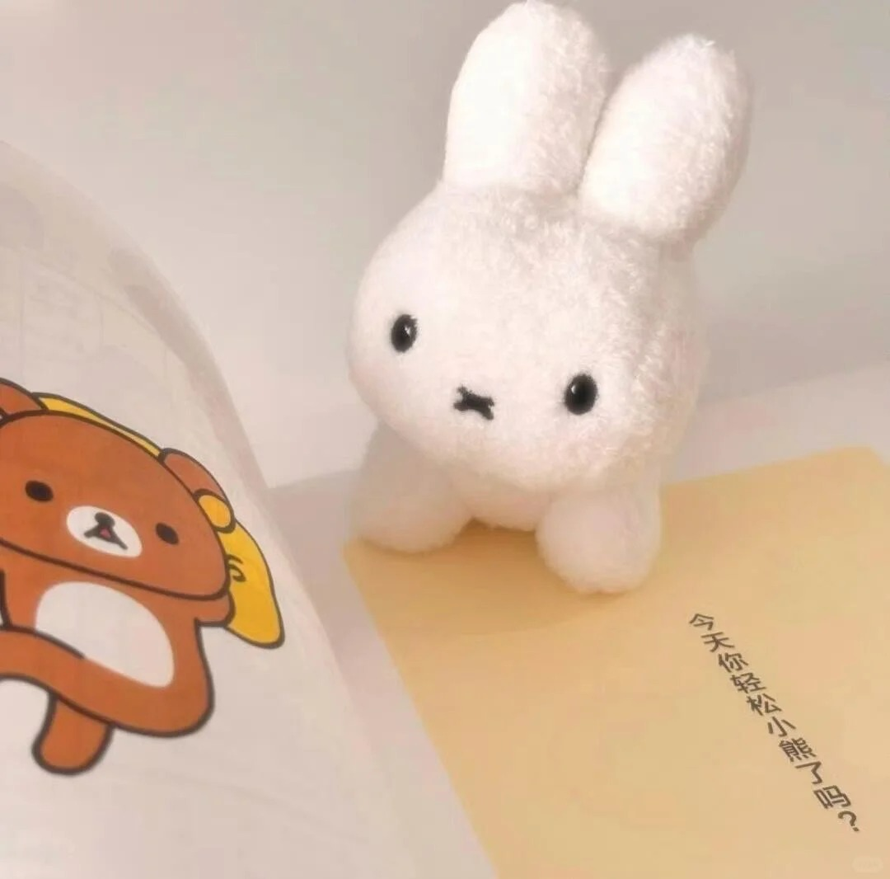
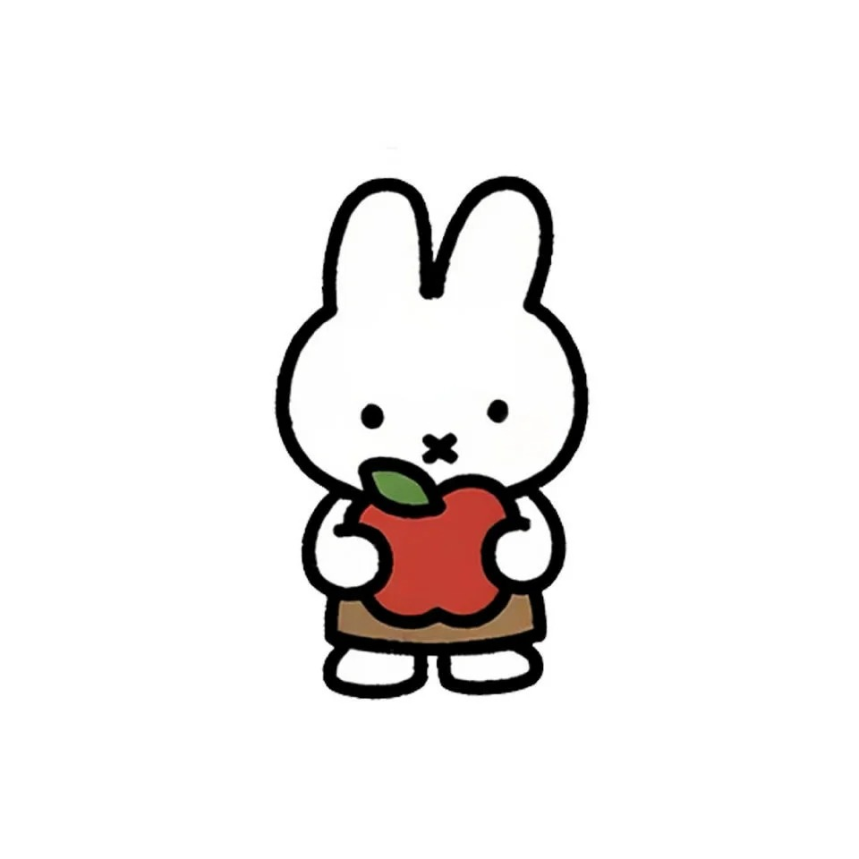
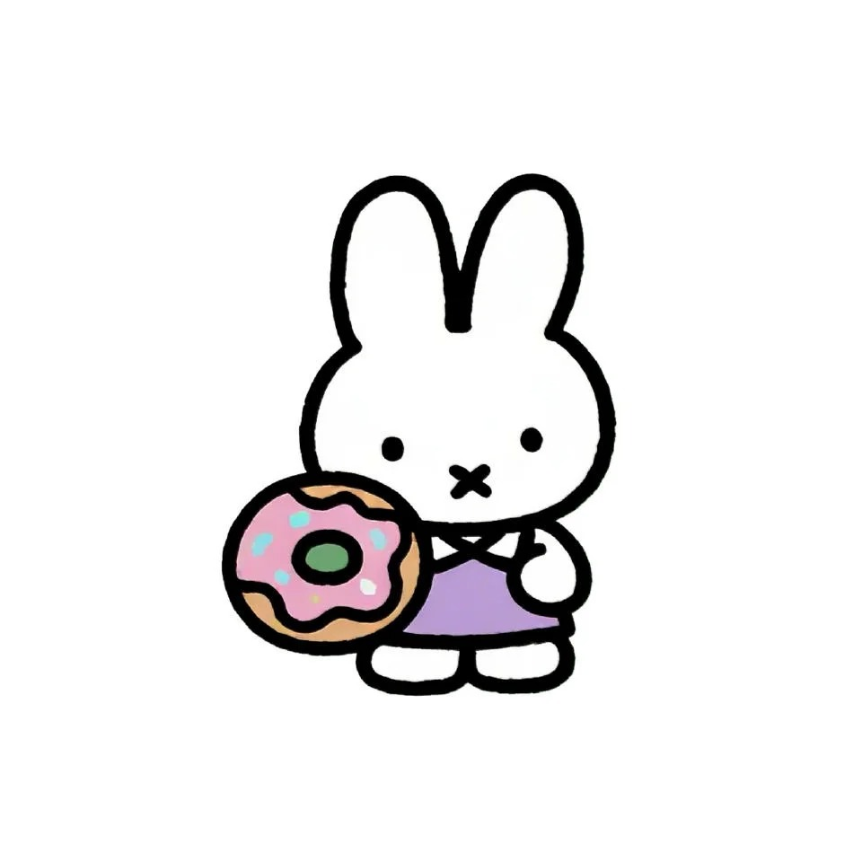
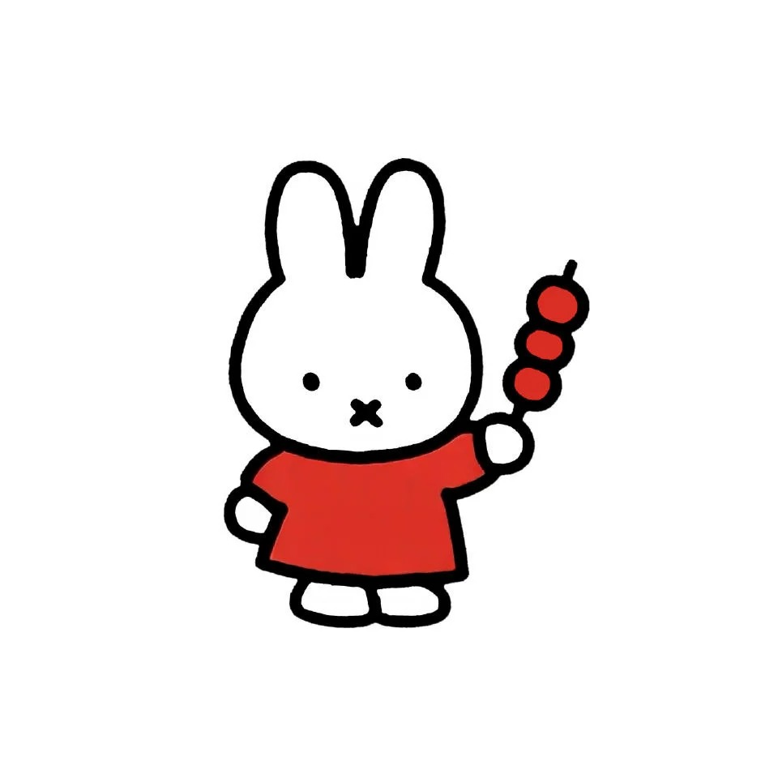
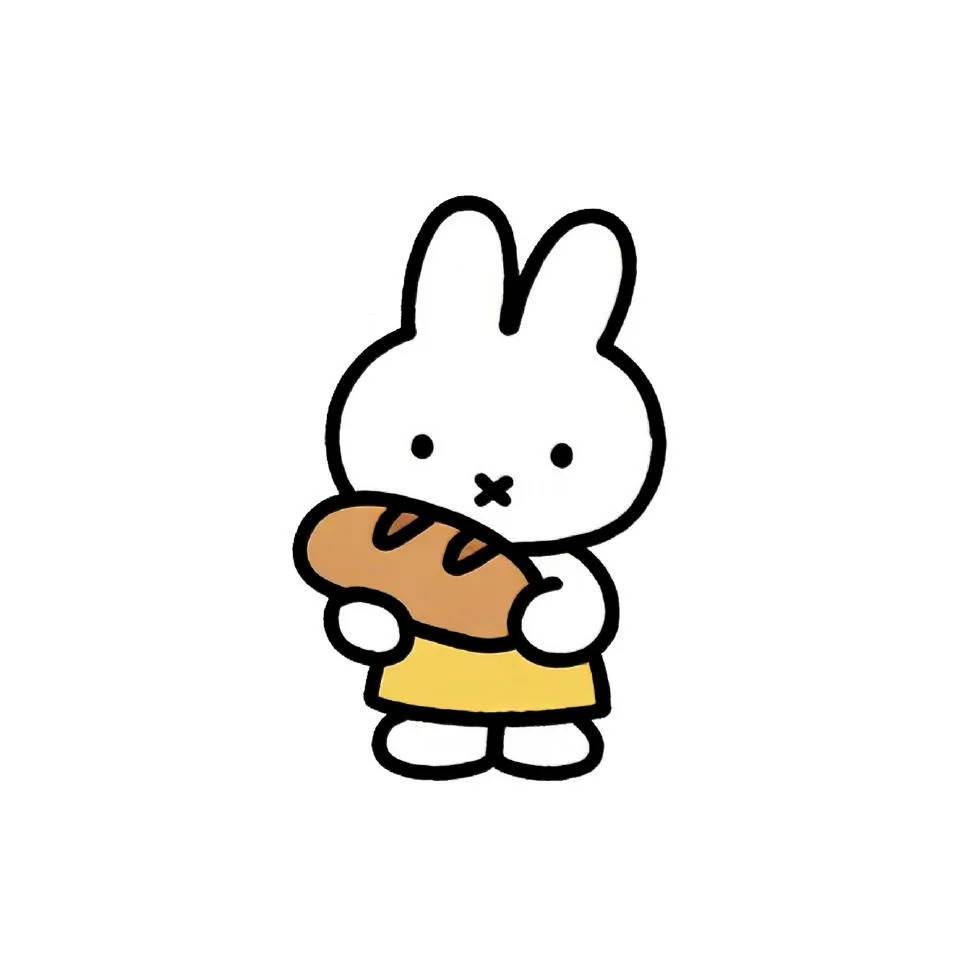
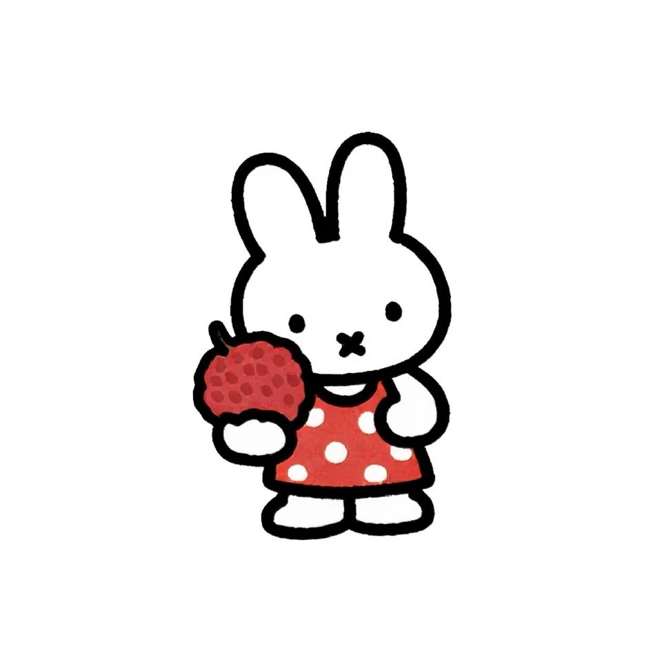
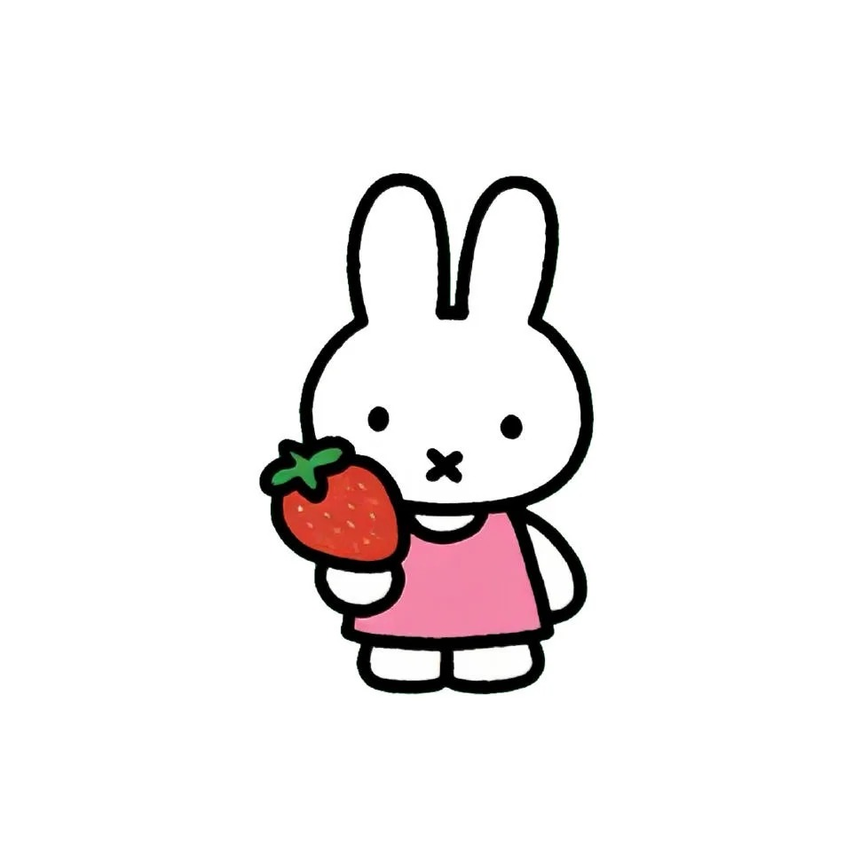
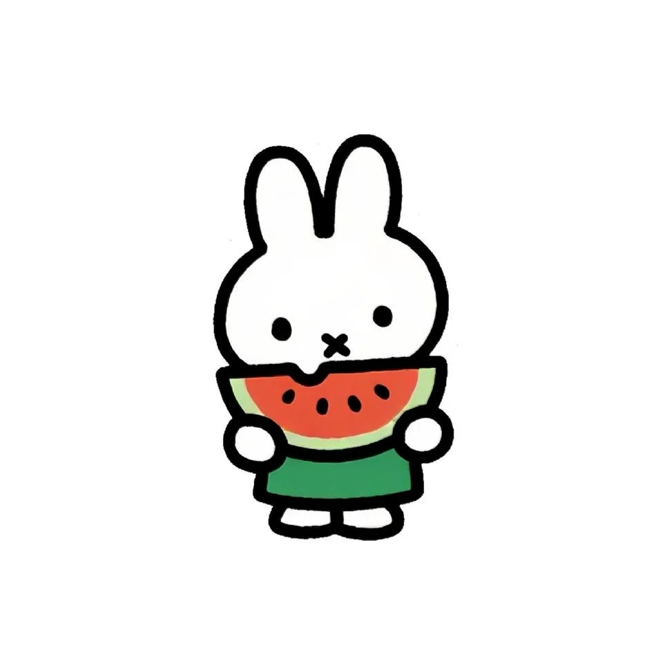
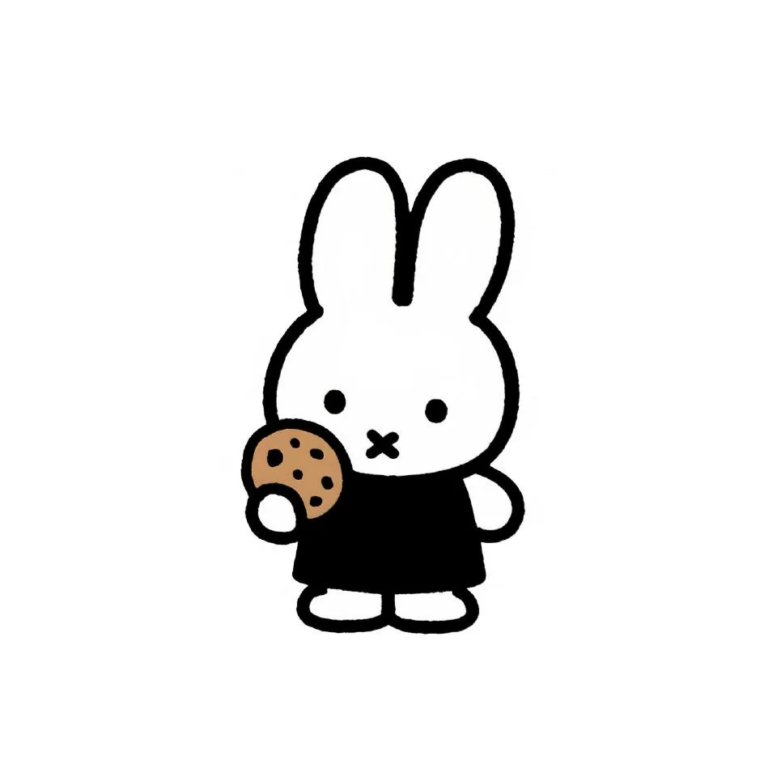

A STORY ABOUT US有一些话，
有一些话，
想慢慢说给 你 听。
这里装着我们遇见、靠近和一起走过的地方。
也装着那些当时没来得及认真说出口的心意。

A LITTLE STORY FOR YOU写给 你
写给 你
和我们的故事
从第一次遇见，到想和你一直走下去。

CHAPTER 01 · 初见那天遇见你，
那天遇见你，
我记得很清楚。
【在这里写下你们第一次见面的场景】
那时的我还不知道，后来你会成为我生命里这么重要的人。

CHAPTER 02 · 靠近从认识开始，
从认识开始，
我们一点点变熟。
【写下你们相处、聊天、约见的片段】
我们从“你好”变成了自然地分享每一天。

CHAPTER 03 · 你给的光那段迷茫的日子，
那段迷茫的日子，
谢谢你拉了我一把。
你给我的那句鼓励，对我而言像一束光。
【填入她当时说的话】

CHAPTER 04 · 心动夏天毕业后的那个夏天，
毕业后的那个夏天，
每一个瞬间都在心动。
【写下暑假里暧昧、甜甜的互动】
风很轻，天气很热，而喜欢你的心情藏也藏不住。

OUR JOURNEY · 01苏州－南京
苏州－南京
我们第一次出门玩
第一次一起去远一点的地方，从苏州的水巷走到南京的梧桐树下。

OUR JOURNEY · 02
我们一起去 杭州
第一次，把西湖边的风也写进故事。

OUR JOURNEY · 03
我们一起在 老家
最熟悉的地方，因为有你变得不一样。

OUR JOURNEY · 04
我们一起去 青岛
海风、浪花，还有靠得很近的我们。

OUR JOURNEY · 05
我们又一起去 苏州
再走一次熟悉的水巷，还是会因为和你一起而开心。
OUR JOURNEY · 06
我们又一起去 杭州
同一座城，又多了一段新的回忆。

OUR JOURNEY · 07
我们一起去 大连
沿着海岸慢慢走，把北方的海也留进回忆。

OUR JOURNEY · 08
我们一起去 长沙
热闹的街巷、好吃的晚餐，还有一起走到很晚的我们。
JUST LOOK AT YOU你真的是一个
你真的是一个
很美的宝宝。
每一张照片里的你，都值得被好好珍藏。
美照 01在 script.js 中替换照片地址
THE LAST PAGE故事还没有结束，
故事还没有结束，
我想和你继续写下去。
大照片 01在 script.js 中替换照片地址